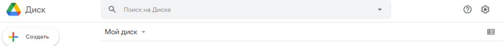

Как зайти в Google диск
1. Для перехода в Google Диск нажмите в верхнем правом углу экрана на 9 точек и кликните на значок Диск:
2. Нажав на пункт меню Мой диск, вы получаете доступ к вашим личным файлам:
3. После открытия Google Drive в десктопной версии появляются все хранимые файлы и строка поиска. С помощью поисковой системы Google Диска можно легко и быстро найти нужный вам файл по заданным параметрам. Достаточно в верхнем горизонтальном поле главной страницы ресурса «Поиск на диске» ввести название документа — и программа тут же приступает к поисковым действиям. В случае, если вы по какой-то причине не можете воспроизвести название документа, можно тут же выбрать тип документа (файлы PDF, презентации, изображения и т. д.), что значительно облегчит его поиск, или задать следующие параметры поиска: дату изменения, определенные, содержащиеся в документе слова, владельца документа, его соавторов и т. д.
Поиск позволяет быстро находить документы по названию. Это удобно, если пользователь хранит большой объем информации в одном месте.
4. Слева находится кнопка «Создать» для загрузки файлов. В мобильной версии при клике на цветной «+» появится аналогичное меню. В нем представлены следующие возможности:
Интерфейс сервиса понятный и доступный для новичков, так как подписи и инструкции помогают быстро разобраться с функционалом.
Как создать папку на Гугл Диске
Для создания папки выберите раздел «Создать» и кликните на «Папку». В открывшемся окне придумайте название для новой папки. После можно добавить в неё имеющиеся файлы или создать новые.